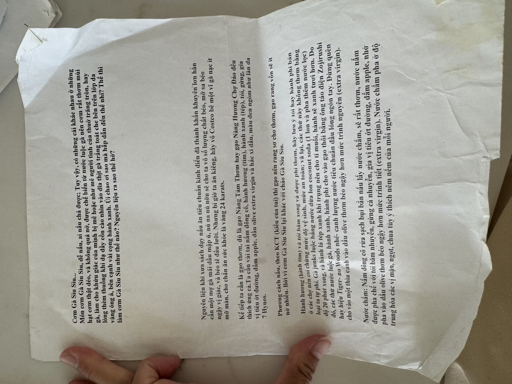

← Back to recipes
Cơm Gà Siu Siu
Hainanese-Style Chicken Rice
From Mẹ — Oanh
Nguyên liệu · Ingredients
Gà · Chicken
- 1 whole chicken (Mẹ used the Costco rotisserie-sized ones)
- 3-inch piece of ginger, sliced
- 1 onion, halved
- 3 stalks scallion
- 1 can coconut soda (nước soda dừa)
- Salt to taste
Cơm · Rice
- 3 cups jasmine rice — Nấm Tấm Thơm or Nàng Hương (Mẹ was particular about the brand)
- Chicken broth from poaching (to replace the water)
- 2–3 pandan leaves, tied in a knot (lá dứa)
- 1 tablespoon extra virgin olive oil
- Pinch of salt
Nước chấm · Dipping Sauce
- 3-inch piece of ginger, finely minced
- 3 stalks scallion, finely chopped
- 3 tablespoons extra virgin olive oil
- 2 tablespoons apple cider vinegar
- 1 teaspoon sugar
- ½ teaspoon salt
- Fresh cilantro, chopped
Cách làm · Instructions
- Clean the chicken thoroughly. Rub with salt and rinse well. Place in a large pot with the ginger, halved onion, scallion, and coconut soda. Add enough cold water to cover the chicken completely.
- Bring to a boil over high heat, then immediately reduce to a gentle simmer. Skim off any foam that rises. Poach the chicken for about 35–40 minutes — the skin should be smooth and the juices should run clear when you pierce the thigh.
- Remove the chicken and plunge it into a large bowl of ice water. This is Mẹ's secret — it shocks the skin so it tightens up and becomes silky, with that signature jelly-like texture underneath. Let it rest in the ice bath for 15 minutes.
- Strain and reserve the poaching broth. Rinse the rice and add it to your rice cooker. Replace the water entirely with the chicken broth — this is what makes the rice so fragrant and rich. Add the pandan leaves, olive oil, and a pinch of salt. Cook as usual.
- Make the ginger-scallion dipping sauce: Heat the olive oil until warm (not smoking). Pour over the minced ginger and chopped scallion — it should sizzle gently. Stir in the vinegar, sugar, and salt. Add the cilantro.
- Chop the chicken into pieces, Vietnamese-style — through the bone with a cleaver. Arrange on a platter.
- Serve the chicken over the fragrant rice with the ginger-scallion sauce on the side. Mẹ always served this with a bowl of the leftover broth as a simple soup, and extra cucumber slices on the plate.
Công thức gốc · Original handwritten recipe

❦
A recipe from Mẹ's kitchen